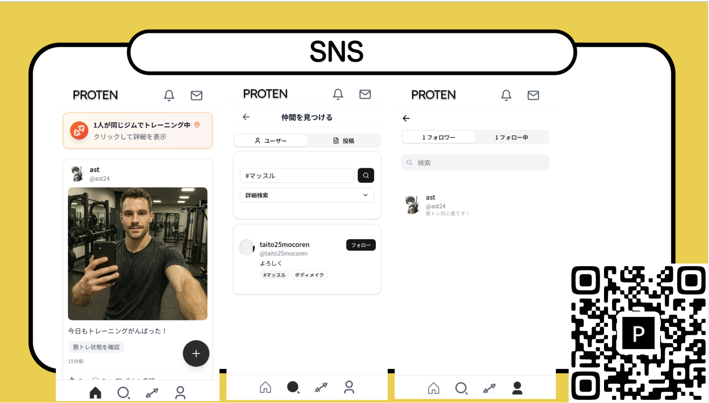
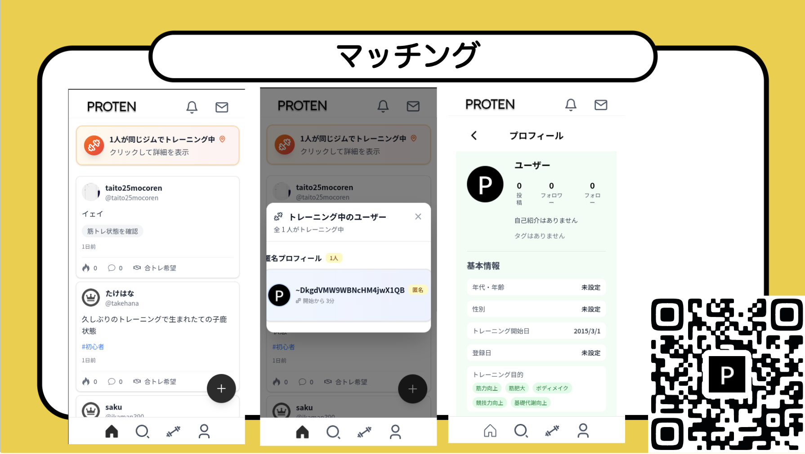

PROTEN
2025 / Product
tornad2025 企業賞 受賞
PROTEN は、筋トレ初心者向けのSNS ×マッチングアプリだ。「一人では筋トレが続かない」という悩みを解決するため、同じジムに通う仲間と簡単につながり、一緒にトレーニングする「合トレ」を可能にする。また、SNS 投稿機能で他の仲間と頑張りをシェアしたり、自分の努力を記録したりすることで、モチベーションを維持する。孤独になりがちな筋トレを「仲間と楽しむ」体験に変え、「挫折しない」筋トレを実現する。